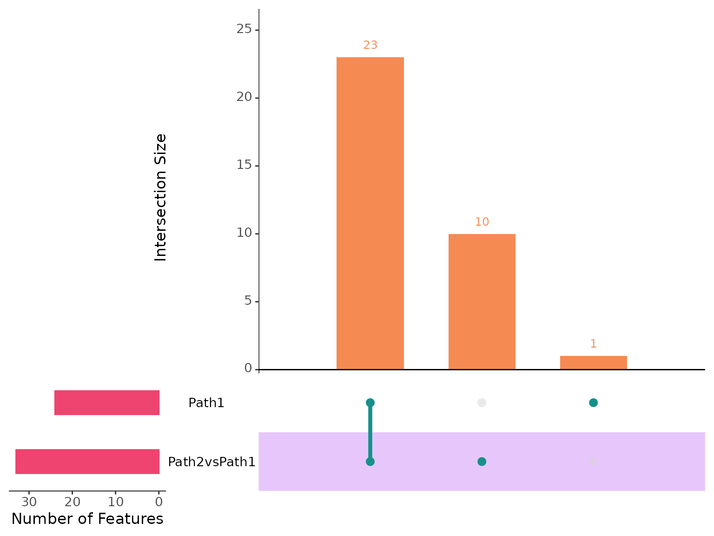
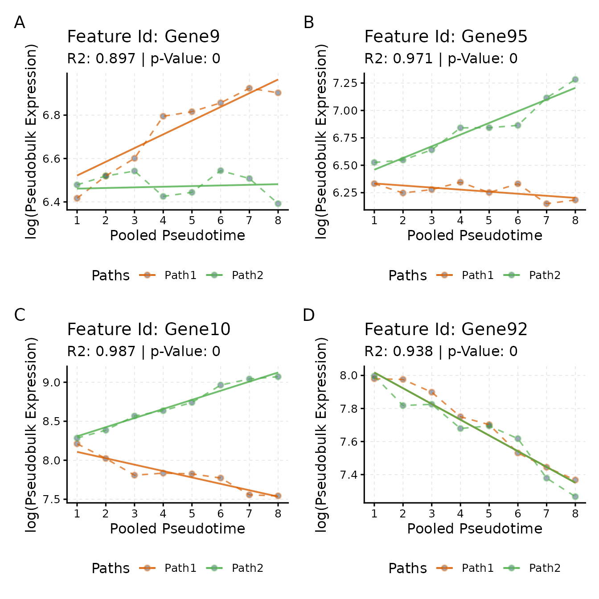
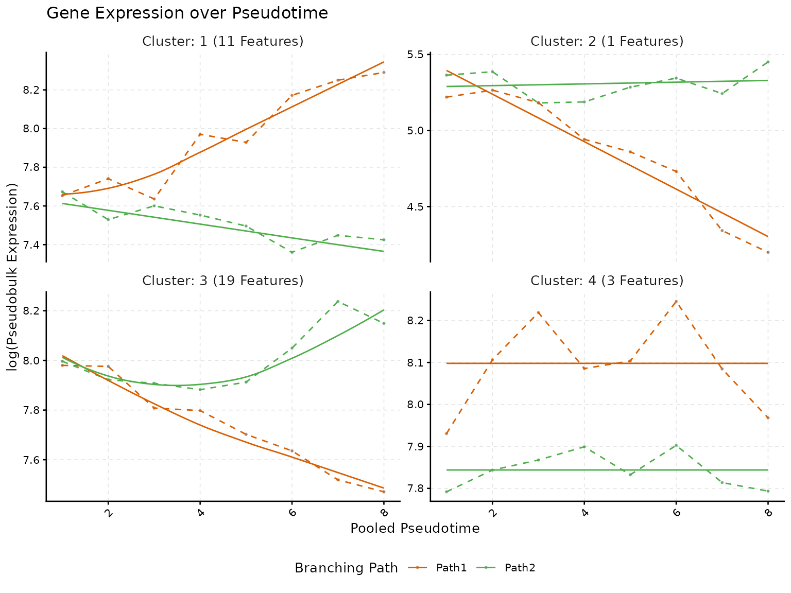

Quick Start Guide
Basic Steps
Priyansh Srivastava
Source:vignettes/Basic-Workflow.Rmd
Basic-Workflow.RmdAbstract
scMaSigPro is an R package designed for the serial
analysis of single-cell RNA-seq (scRNA-Seq) data along inferred
pseudotime. It builds upon the maSigPro
Bioconductor package to identify genes with significant expression
changes across different branching paths in a pseudotime-ordered
scRNA-Seq dataset. This vignette illustrates the basic workflow of
scMaSigPro, providing a step-by-step guide for users
using a small simulated dataset.
Introduction
scMaSigPro is a polynomial regression-based approach
inspired by the maSigPro
Bioconductor package tailored for scRNA-Seq data. It first discretizes
single cell expression along inferred pseudotime while preserving order.
Afterwards it applies the maSigPro
model to pinpoint genes exhibiting significant expression profile
differences among branching paths and pseudotime.
Installation
Currently, scMaSigPro is available on GitHub and can be
installed as follows:
# Install BiocManager if needed, then scMaSigPro together with its
# Bioconductor dependencies from GitHub
if (!requireNamespace("BiocManager", quietly = TRUE)) {
install.packages("BiocManager")
}
BiocManager::install("BioBam/scMaSigPro")Basic Workflow
Here, we demonstrate the basic workflow of scMaSigPro
using a simulated dataset included in the package, simulated via splatter.
Load the scMaSigPro package and the dataset
# Set Seed for Reproducibility
set.seed(123)
# Load Package
library(scMaSigPro)
# Load example data
data("splat.sim", package = "scMaSigPro")Plot the data (Optional)
# Load
suppressPackageStartupMessages(require(ggplot2))
suppressPackageStartupMessages(require(SingleCellExperiment))
# Extract PCA
df <- as.data.frame(reducedDim(splat.sim)[, c(1:2)])
df$Step <- colData(splat.sim)$Step
df$Group <- colData(splat.sim)$Group
# Plot the data
ggplot(
df,
aes(x = PC1, y = PC2, color = Step, shape = Group)
) +
geom_point() +
theme_minimal()-1.png)
If you are interested in learning how this data is simulated and what
information it contains, you can try ?splat.sim in the R
console to read about the details.
The UMAP visualization of our dataset reveals a bifurcating trajectory, illustrating how one cell type diverges into two distinct cell types. This bifurcation is driven by the selective expression of genes along the pseudotime. In the UMAP plot, the two branching paths of differentiation are represented by points with distinct shapes, each corresponding to a different cell type.
Furthermore, the points in the UMAP are color-coded based on a simulated pseudotime-like variable, termed Step, from the Splatter package. This color gradient effectively captures the progression of cells along the pseudotime axis, providing insights into the temporal dynamics of cellular differentiation.
Convert to scMaSigPro Object
scMaSigPro stores the data and results in its own class
(now referred to as scmpObject). as_scmp()
creates it from a SingleCellExperiment
whose cell metadata holds a pseudotime column and a branching-path
column, and create_scmp() creates it from a count matrix
and a table of cell metadata with the same two columns. Pseudotime and
path labels from trajectory tools such as Monocle3
or slingshot are extracted by the user first; the “Common Root Cells”
vignette shows how for a Monocle3 cell_data_set. Here,
using the simulated object (of the SingleCellExperiment
class) that we have just loaded into the R environment, we will
demonstrate the direct conversion to scmpObject object.
In our case, we already have pseudotime and path information stored
in the colData slot of the splat.sim. The
Step column holds the information for the simulated steps of
each path, which we can treat as a pseudotime variable, and the
Group column has information regarding branching path, i.e., to
which branching path each of the cell belongs. We can view this
information by executing
View(as.data.frame(colData(splat.sim))).
## Cell Batch Group ExpLibSize Step sizeFactor
## Cell1 Cell1 Batch1 Path2 56391.37 42 0.8847501
## Cell2 Cell2 Batch1 Path1 54923.49 41 0.7779386
## Cell3 Cell3 Batch1 Path1 52122.28 23 0.7687344
## Cell4 Cell4 Batch1 Path1 59039.15 42 0.9017475
## Cell5 Cell5 Batch1 Path2 64317.37 79 1.0111086We will use as_scmp() from scMaSigPro and
direct it to use the columns present in the dataset as the columns for
Pseudotime and Path. To do this, we have to
enable the parameter labels_exist and then pass the
existing column names as a named list.
# Helper Function to convert annotated SCE object to scmpObject
scmp_ob <- as_scmp(
object = splat.sim, from = "sce",
verbose = TRUE,
additional_params = list(
labels_exist = TRUE,
exist_ptime_col = "Step",
exist_path_col = "Group"
)
)## Supplied object: SingleCellExperiment object## Overwriting columns in cell level metadata, 'Group' is replaced by 'Path' and 'Step' is replaced by 'Pseudotime'.Once the object is created, we can type the name of the object in the R console to view various attributes, such as the dimensions (number of cells and number of genes), the available branching paths, and the range of pseudotime.
## Class: ScMaSigProClass
## nCells: 200
## nFeatures: 100
## Pseudotime Range: 1 100
## Branching Paths: Path2, Path1Pseudo-bulking along the continuum with
sc.squeeze()
scMaSigPro provides a comprehensive function for
pseudo-bulking along the pseudotime continuum, named
sc.squeeze(). This function discretizes the original
pseudotime values into bins using histogram binning methods. The
sc.squeeze() function includes various parameters that can
be tailored depending on the characteristics of the data. Here, we will
show the basic usage with the default parameters:
scmp_ob <- sc.squeeze(scmp_ob)The console output of scMaSigPro is dynamic and displays
more attributes as the analysis progresses. To view the results of the
binning procedure, we can simply type the object’s name into the
console:
## Class: ScMaSigProClass
## nCells: 200
## nFeatures: 100
## Pseudotime Range: 1 100
## Branching Paths: Path2, Path1
## Binned Pseudotime: 1-8(Range), 4.5(Mean),
## Number of bins-> Path1: 8 Path2: 8
## Average bin Size-> Path1: 12 Path2: 13Here, we observe that the original pseudotime, which ranged from 1 to 100 with two cells at each step and different paths, is now rescaled to a range of 1 to 8, with each path having an equal number of bins (8+8 in total). We also see the average bin sizes per path, indicating the average number of cells that make up a single bin for each path.
Visualize bins
We can also visually inspect the binning process using a tile plot:
plotBinTile(scmp_ob)
The tile plot provides a clear view of the number of cells in each bin and how the sizes of bins compare with those of other paths in the same scmp_binned_pseudotime.
Setting up the Polynomial Model
scMaSigPro, being the successor of maSigPro,
utilizes the same polynomial regression model. Let’s consider a case
with two branching paths along the same pseudotime scale, modeled with a
quadratic polynomial. The model can be represented as follows:
## Loading required package: knitrTo construct this model, we use sc.set.poly() to include
quadratic terms:
# Polynomial Degree 2
scmp_ob <- sc.set.poly(scmp_ob, poly_degree = 2)Visualize the model
Once the model is stored, we can visualize the corresponding
polynomial using the showPoly() function:
showPoly(scmp_ob)## [1] "beta0 + beta1*Path2vsPath1 + beta2*scmp_binned_pseudotime + beta3*scmp_binned_pseudotimexPath2 + beta4*scmp_binned_pseudotime2 + beta5*scmp_binned_pseudotime2xPath2"Similarly, we can fit a cubic polynomial by setting the polynomial degree to 3:
# Polynomial Degree 3
scmp_ob <- sc.set.poly(scmp_ob, poly_degree = 3)
showPoly(scmp_ob)## [1] "beta0 + beta1*Path2vsPath1 + beta2*scmp_binned_pseudotime + beta3*scmp_binned_pseudotimexPath2 + beta4*scmp_binned_pseudotime2 + beta5*scmp_binned_pseudotime2xPath2 + beta6*scmp_binned_pseudotime3 + beta7*scmp_binned_pseudotime3xPath2"However, for simplicity, we will explore a polynomial of degree 1.
Note that increasing the polynomial degree enhances
scMaSigPro’s performance in capturing exponential and
nonlinear gene expression patterns:
# Polynomial Degree 1
scmp_ob <- sc.set.poly(scmp_ob, poly_degree = 1)
showPoly(scmp_ob)## [1] "beta0 + beta1*Path2vsPath1 + beta2*scmp_binned_pseudotime + beta3*scmp_binned_pseudotimexPath2"In the above model we have:
beta0: Accounts for differences in expression from the start to the end.
_beta1*Path2vsPath1_: Captures differences between the branching paths, assuming path-1 does not change along pseudotime.
_beta2*scmp_binned_pseudotime_: Reflects differences across pseudotime.
_beta3*scmp_binned_pseudotimexPath2_: Represents interaction between pseudotime and path differences.
Detecting Genes with Non-Flat Profiles
To identify genes that demonstrate significant changes along the
pseudotime contniuum, we use the sc.p.vector(). This
function, adapted from the original maSigPro,
includes additional parameters such as the use of offsets
and weights.
scMaSigPro expects raw counts as input because it models
data using a negative binomial distribution, a count distribution, so
the counts should not be normalized to continuous values. To account for
library size differences, it uses offsets, which are the
log of size factors, similar to DESeq2.
For those who prefer to supply continuous data normalized using methods like log(1+x), the distribution can be changed during model fitting.
We can execute sc.p.vector() as follows:
# Detect non-flat profiles
scmp_ob <- sc.p.vector(scmp_ob,
offset = TRUE, p_value = 0.05, verbose = FALSE,
log_offset = TRUE
)
scmp_ob## Class: ScMaSigProClass
## nCells: 200
## nFeatures: 100
## Pseudotime Range: 1 100
## Branching Paths: Path2, Path1
## Binned Pseudotime: 1-8(Range), 4.5(Mean),
## Number of bins-> Path1: 8 Path2: 8
## Average bin Size-> Path1: 12 Path2: 13
## Polynomial Order: 1
## No. of Significant Profiles: 50The console output reveals that scMaSigPro detected 51
genes with non-flat profiles.
Model Refinement
Having identified genes with significant profiles, we can refine
their polynomial models using sc.t.fit(). This function
evaluates each term of the polynomial model. In our case, it will assess
which among “beta0 + beta1*Path2vsPath1 + beta2*scmp_binned_pseudotime +
beta3*scmp_binned_pseudotimexPath2” significantly contributes to the
differences. To execute sc.t.fit(), we proceed as
follows:
# Model refinement
scmp_ob <- sc.t.fit(scmp_ob, verbose = FALSE)
scmp_ob## Class: ScMaSigProClass
## nCells: 200
## nFeatures: 100
## Pseudotime Range: 1 100
## Branching Paths: Path2, Path1
## Binned Pseudotime: 1-8(Range), 4.5(Mean),
## Number of bins-> Path1: 8 Path2: 8
## Average bin Size-> Path1: 12 Path2: 13
## Polynomial Order: 1
## No. of Significant Profiles: 50
## No. of Influential Features: 8Selection of Genes
With our refined models in hand, we now focus on identifying genes
showing significant differences with pseudotime, among paths, or both.
For this purpose, we use the sc.filter() function. Our aim
is to select models with a relatively high
,
indicating simple linear relationships. The vars parameter
in sc.filter() allows us to extract different sets of
significant genes. Setting vars = 'all' retrieves all
non-flat profiles identified in sc.p.vector() with
the specified threshold. The option vars = 'groups fetches
genes per path, resulting in two gene lists that demonstrate associative
significance among paths, helping us identify genes associated with one
path or the other along the pseudotime continuum. The
vars = 'each' option finds significance for each term in
the polynomial. In our case, we are interested in genes differentially
expressed between paths and over pseudotime continuum, so we will choose
vars = 'groups.
scmp_ob <- sc.filter(
scmpObj = scmp_ob,
rsq = 0.7,
vars = "groups",
intercept = "dummy",
includeInflu = TRUE
)By setting the vars parameter to “groups”, the function will add genes with >= 0.7 to the object. To explore the number of genes per group, we will make an upset plot:
plotIntersect(scmp_ob)## Warning: `aes_string()` was deprecated in ggplot2 3.0.0.
## ℹ Please use tidy evaluation idioms with `aes()`.
## ℹ See also `vignette("ggplot2-in-packages")` for more information.
## ℹ The deprecated feature was likely used in the UpSetR package.
## Please report the issue at <https://github.com/hms-dbmi/UpSetR/issues>.
## This warning is displayed once per session.
## Call `lifecycle::last_lifecycle_warnings()` to see where this warning was
## generated.## Warning: Using `size` aesthetic for lines was deprecated in ggplot2 3.4.0.
## ℹ Please use `linewidth` instead.
## ℹ The deprecated feature was likely used in the UpSetR package.
## Please report the issue at <https://github.com/hms-dbmi/UpSetR/issues>.
## This warning is displayed once per session.
## Call `lifecycle::last_lifecycle_warnings()` to see where this warning was
## generated.## Warning: The `size` argument of `element_line()` is deprecated as of ggplot2 3.4.0.
## ℹ Please use the `linewidth` argument instead.
## ℹ The deprecated feature was likely used in the UpSetR package.
## Please report the issue at <https://github.com/hms-dbmi/UpSetR/issues>.
## This warning is displayed once per session.
## Call `lifecycle::last_lifecycle_warnings()` to see where this warning was
## generated.
Here, we observe that 23 genes belong to both Path2vsPath1 and Path1, indicating that these genes not only change along pseudotime but also exhibit significantly different expression between the two paths. Additionally, there are 10 genes uniquely associated with Path2vsPath1. This implies that Path2 has 10 genes that are significantly differentially expressed over time, using Path1 genes as a reference. Let’s explore a few of these genes:
FigureA <- plotTrend(scmp_ob, "Gene9", logs = TRUE, logType = "log", lines = TRUE)
FigureB <- plotTrend(scmp_ob, "Gene95", logs = TRUE, logType = "log", lines = TRUE)
FigureC <- plotTrend(scmp_ob, "Gene10", logs = TRUE, logType = "log", lines = TRUE)
FigureD <- plotTrend(scmp_ob, "Gene92", logs = TRUE, logType = "log", lines = TRUE)
patchwork::wrap_plots(FigureA, FigureB, FigureC, FigureD, ncol = 2) +
patchwork::plot_annotation(tag_levels = "A")
These plots illustrate the gene expression trends for selected genes, providing insights into their behavior in different paths. Fortunately, since we are using simulated data, we can validate these trends by extracting gene-level metadata from our simulated object:
groundTruth <- data.frame(rowData(splat.sim), row.names = NULL)
print(groundTruth[groundTruth$Gene %in% c("Gene9", "Gene95", "Gene10", "Gene92"), c(1, 2, 6, 8)])## Gene BaseGeneMean DEFacPath1 DEFacPath2
## 9 Gene9 0.5478075 1.5743095 1.0000000
## 10 Gene10 2.7941952 0.5499756 2.8090798
## 92 Gene92 2.4912557 0.4996190 0.4264288
## 95 Gene95 0.4676235 1.0000000 2.4591537The ground truth data reveals, for example, that Gene9 has a base gene mean of 0.5, a fold change of 1.5 in Path1, and remains at the same expression level for Path2. This trend is accurately captured in our analysis, as shown in Figure-A. Similarly, Gene92 does not show a significant difference between the paths but demonstrates a downtrend along pseudotime in both paths, a finding we successfully recapitulate in Figure-D.
Cluster Trends
To discern general trends among the genes, we can cluster and
visualize them together using the sc.cluster.trend() and
plotTrendCluster(). By default, this function employs
hierarchical clustering (hclust) and we will divide the genes into 4
clusters.
# Cluster Trend
scmp_ob <- sc.cluster.trend(
scmp_ob,
geneSet = "union",
k = 4
)
# Plot
plotTrendCluster(
scmpObj = scmp_ob,
plot = "coeff",
logs = TRUE,
verbose = FALSE,
lines = TRUE
)
This visualization helps in understanding the collective behavior of genes within each cluster, highlighting patterns and trends that might be relevant for further biological interpretation.
This concludes the basic usage quick start guide of
scMaSigPro. Please refer to other vignettes for more
in-depth analysis.
Session Info
sessionInfo(package = "scMaSigPro")## R version 4.6.1 (2026-06-24)
## Platform: x86_64-pc-linux-gnu
## Running under: Ubuntu 24.04.5 LTS
##
## Matrix products: default
## BLAS: /usr/lib/x86_64-linux-gnu/openblas-pthread/libblas.so.3
## LAPACK: /usr/lib/x86_64-linux-gnu/openblas-pthread/libopenblasp-r0.3.26.so; LAPACK version 3.12.0
##
## locale:
## [1] LC_CTYPE=C.UTF-8 LC_NUMERIC=C LC_TIME=C.UTF-8
## [4] LC_COLLATE=C.UTF-8 LC_MONETARY=C.UTF-8 LC_MESSAGES=C.UTF-8
## [7] LC_PAPER=C.UTF-8 LC_NAME=C LC_ADDRESS=C
## [10] LC_TELEPHONE=C LC_MEASUREMENT=C.UTF-8 LC_IDENTIFICATION=C
##
## time zone: UTC
## tzcode source: system (glibc)
##
## attached base packages:
## character(0)
##
## other attached packages:
## [1] scMaSigPro_0.0.5.9000
##
## loaded via a namespace (and not attached):
## [1] SummarizedExperiment_1.42.0 gtable_0.3.6
## [3] xfun_0.62 bslib_0.12.0
## [5] ggplot2_4.0.3 Biobase_2.72.0
## [7] lattice_0.22-9 vctrs_0.7.3
## [9] tools_4.6.1 generics_0.1.4
## [11] stats4_4.6.1 parallel_4.6.1
## [13] methods_4.6.1 Matrix_1.7-5
## [15] RColorBrewer_1.1-3 S7_0.2.2
## [17] desc_1.4.3 S4Vectors_0.50.3
## [19] lifecycle_1.0.5 compiler_4.6.1
## [21] farver_2.1.2 textshaping_1.0.5
## [23] BiocStyle_2.40.0 Seqinfo_1.2.0
## [25] codetools_0.2-20 htmltools_0.5.9
## [27] sass_0.4.10 yaml_2.3.12
## [29] pkgdown_2.2.1 pillar_1.11.1
## [31] jquerylib_0.1.4 MASS_7.3-65
## [33] BiocParallel_1.46.0 SingleCellExperiment_1.34.0
## [35] DelayedArray_0.38.2 cachem_1.1.0
## [37] abind_1.4-8 nlme_3.1-169
## [39] digest_0.6.39 bookdown_0.48
## [41] splines_4.6.1 labeling_0.4.3
## [43] fastmap_1.2.0 grid_4.6.1
## [45] cli_3.6.6 SparseArray_1.12.3
## [47] patchwork_1.3.2 S4Arrays_1.12.1
## [49] grDevices_4.6.1 withr_3.0.3
## [51] utils_4.6.1 scales_1.4.0
## [53] rmarkdown_2.32 XVector_0.52.0
## [55] matrixStats_1.5.0 otel_0.2.0
## [57] gridExtra_2.3.1 datasets_4.6.1
## [59] ragg_1.5.2 stats_4.6.1
## [61] graphics_4.6.1 evaluate_1.0.5
## [63] knitr_1.52 UpSetR_1.4.1
## [65] GenomicRanges_1.64.0 IRanges_2.46.0
## [67] mgcv_1.9-4 rlang_1.3.0
## [69] Rcpp_1.1.2 glue_1.8.1
## [71] BiocManager_1.30.27 BiocGenerics_0.58.1
## [73] base_4.6.1 jsonlite_2.0.0
## [75] R6_2.6.1 plyr_1.8.9
## [77] MatrixGenerics_1.24.0 systemfonts_1.3.2
## [79] fs_2.1.0